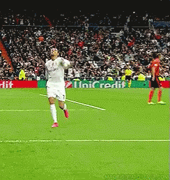
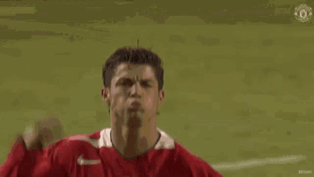

Cristiano Ronaldo
Integrantes:
Pia Fuentes Mellado
Dagoberto Anabalon Fridericksen
Diego Hernandez Sepulveda
Bienvenido, en este sitio web encontrara cosas del gran futbolista, Cristiano Ronaldo:
Cristiano Ronaldo dos Santos Aveiro (pronunciación en portugués:5 de febrero de 1985), más conocido como Cristiano Ronaldo o CR7, es un futbolista portugués que juega como delantero en el Manchester United Football Club de la Premier League de Inglaterra y en la selección de Portugal, de la cual es su capitán y máximo goleador histórico.
Identificado habitualmente en los medios de comunicación con el numerónimo CR7,es considerado con frecuencia el mejor y más completo futbolista y goleador del mundo y uno de los mejores de todos los tiempos,por un elevado número de personas y prensa vinculadas al deporte,
El maximo goleador de la historia
Es, con 807 goles, el máximo goleador en la historia del fútbol profesional, y con 450 el máximo goleador histórico del Real Madrid Club de Fútbol, consiguiéndolo en las nueve temporadas que jugó en este club. Es además, según los portales expertos en estadísticas históricas de Rec.Sport.Soccer Statistics Foundation (RSSSF) y Federación Internacional de Historia y Estadística de Fútbol (IFFHS), el tercer máximo goleador en los campeonatos de Primera División de Europa, con 494 goles. Los datos son reconocidos por la UEFA y la FIFA
Sus inicios

Sus inicios se dieron a la edad de 8 años cuando ingresó a la escuela de fútbol La Andorinha y donde rápidamente empezó a sobresalir por encima de los compañeros de su edad. Tanta era la calidad que mostraba Cristiano, que a la edad de 10 años los clubes C. S. Marítimo y C. D. Nacional mostraron interés de contar con el joven jugador. Después de que se llegó a un acuerdo, el jugador fichó por C. D. Nacional, donde siguió con su formación como futbolista y se convirtió en una de la promesa más grande del fútbol portugués.
En el año 2001, se presentó a pruebas en el Sporting Clube de Portugal, donde superó cada una de manera satisfactoria y logró ser parte de uno de los clubes más populares de Portugal, por lo que tuvo que trasladarse a Lisboa. Por ese tiempo, se le diagnosticó un problema de corazón y tuvo que someterse a una operación, la cual fue satisfactoria y no provocó peligros en la carrera futbolística del jugador.
Trayectoria como profesional en clubes
Debut con el Sporting
El debut como profesional de Cristiano Ronaldo se dio el 14 de agosto de 2002 a la edad de 17 años, en el partido de Clasificación a la Liga de Campeones de Europa, donde el Sporting de Lisboa enfrentó al Inter de Milán
El 30 de septiembre realizó su debut en la liga portuguesa en un partido ante el Sporting Braga, donde su club fue derrotado por un marcador de 4-2. Sus primeros goles como profesional los marcó el 7 de octubre de ese mismo año ante el Moreirense Futebol Clube, donde su equipo ganó por 3-0 y el jugador anotó dos goles, con los que empezó a ser parte del primer equipo del Sporting de Lisboa. El talento mostrado por el portugués hizo que fuera el primer jugador en formar parte del equipo juvenil, filial y profesional en una misma temporada, y antes de terminar la misma el Sporting de Lisboa ganó la liga portuguesa, La copa y la supercopa de Portugal.
Su talento fue rápidamente captado por varios clubes europeos, por lo que comenzaron a observarlo equipos como el Liverpool de Inglaterra, equipo que no concretó su fichaje porque lo consideraba muy joven y debía potencializar más sus habilidades. En el año 2003 el Sporting de Lisboa y el Manchester United de Inglaterra jugaron un partido amistoso por la inauguración del Estadio José Alvalade, que sería escenario de la Eurocopa 2004; en ese partido el jugador mostró una gran calidad y técnica futbolística que sorprendió al rival y a su director técnico Alex Ferguson, quien se interesó en contar con el jugador en su equipo y el verano de ese mismo año se concretó el fichaje del portugués por una cifra cercana a los 18 millones de euros.
Ronaldo en el Manchester United (2003-2009)

En el inicio de la temporada 2003-2004, Cristiano Ronaldo se incorporó en el Manchester United, donde lució la camiseta número 7, que temporadas atrás la portaba el inglés David Beckham. Debutó en la liga el 16 agosto de 2003, en el partido contra el Bolton, donde ingresó al minuto 60 de partido. Su primer gol con la camiseta del equipo de Manchester, lo anotó el 1 de noviembre de ese mismo año, en el partido de liga ante el Portsmouth F. C. Para el final de temporada, el jugador portugués ganó la FA Cup con su equipo y marcó un gol que aportó al título conseguido. En la segunda temporada, el futbolista aumentó mucho más su nivel, se destacó como uno de los mejores jugadores juveniles del mundo y aseguró un puesto en el equipo titular del Manchester United.
Iniciando la liga 2005-2006, el jugador marcó el gol número mil en la historia de la Premier League y fue elegido como el mejor jugador joven del año. En esa temporada también ganó la copa de la liga y anotó 12 goles en 47 partidos.
En la temporada 2006-2007, Cristiano Ronaldo se empezó a destacar por la habilidad para dar asistencias de gol a sus compañeros y mejorar su promedio goleador, por eso, fue elegido en noviembre como el jugador del mes de la Premier League y el deportista portugués del año, por el diario A Bola de su país. En esa temporada marcó 17 goles y se coronó campeón de la liga inglesa, lo que lo volvió más atractivo a clubes como, el Inter de Milán, el Real Madrid y el Barcelona. El 13 de abril de 2007, extendió su contrato con el Manchester United hasta el año 2012 y su sueldo quedó en 8 millones de euros por temporada, siendo uno de jugadores del mundo mejor pagados. En esa temporada también fue reconocido por la Asociación de futbolistas Profesionales como jugador del año y mejor jugador joven del año.
Para el inicio de la temporada 2007-2008, el jugador portugués siguió sumando títulos en su carrera, y fue el 5 de agosto de 2007 que logró salir campeón de la Community Shield, partido en el cual el Manchester United derrotó al Chelsea en definición desde el punto penal. Se convirtió en el extremo con más goles marcados en una temporada con el Manchester United, tras marcar 42 goles.
Cristiano Ronaldo, por primera vez disputó una final europea, el 21 de mayo de 2008, cuando su equipo el Manchester United jugó la final de la Liga de Campeones ante el Chelsea FC, partido que finalizó 1-1 en el tiempo reglamentario con gol del portugués, por lo que el título se definió desde el punto de penal donde su equipo se hizo al título europeo y Cristiano Ronaldo ganó su primer campeonato europeo. Tras finalizar la temporada, El jugador logró salir campeón con su equipo de la Premier League y ganar la bota de oro, sumando dos palmares más en su carrera futbolística
Primer Balón de Oro (2008)
Ganó el balón y el de oro y el FIFA World Player en el año 2008, el cual lo identificaba como el mejor jugador del mundo en esa temporada y también hizo parte del once ideal de la FIFA. El talento de Cristiano Ronaldo comenzó a valorarse cada día más, tanto que el Real Madrid ya pretendía hacerse a los servicios del talentoso jugador, sin embargo, una lesión del jugador impidió que el negocio se cerrara en ese año. Antes de lo esperado, el astro portugués se recuperó de su lesión y pudo continuar con las competencias que disputaba el Manchester United en la temporada 2008-2009, donde llegó a la final de la Liga de Campeones por segundo año consecutivo, pero en este caso saliendo subcampeón al caer 2-0 ante el Barcelona FC. Finalizando temporada, el Manchester United logró salir campeón de la Copa de la liga, la Premier League y el mundial de clubes de la FIFA donde su equipo venció 1-0 a Liga de Quito; en esta temporada Ronaldo anotó 33 goles y dio 9 asistencias en 33 partidos, lo que sumaban un total de 118 goles en lo que llevaba de carrera deportiva.
Haciendo historia con el Real Madrid (2009- 2018)
El talentoso jugador portugués siempre manifestó su interés por jugar en un club como el Real Madrid, por lo que se llegó a un acuerdo entre el Manchester United y el equipo español para el traspaso de Cristiano Ronaldo, por una cifra que superó los 90 millones de Euros. El 6 de junio de 2009, el jugador fue presentado en el estadio Santiago Bernabéu antes más de 90 mil hinchas que coreaban su nombre en la frase “Sí, sí, sí, Ronaldo ya está aquí”.
Su primer partido con la camiseta madridista, lo jugó ante el Shamrock Rovers irlandés, el 21 de julio de 2009, en un juego correspondiente a la pretemporada del Real Madrid. En una gira de su equipo por Corea del sur, marcó sus primeros goles con el Real Madrid, en la Copa de la Paz 2009 ante la Juventus de Italia y la Liga de Quito de Ecuador.
Debutó en la liga española el 29 de agosto de 2009, ante el Deportivo de la Coruña donde logró anotar un gol que contribuyó a la victoria de su equipo por 3-2. Días después por Liga de Campeones, el jugador marcó un doblete ante el F. C. Zürich, en la victoria 5-2 del Real Madrid. Cristiano Ronaldo siguió mostrando un destacado rendimiento, y el 5 de mayo del año 2010 marcó su primera tripleta de goles ante el Mallorca. Aunque el jugador portugués logró marcar 33 goles en 35 partidos en la temporada 2009-2010, no consiguió ningún título con el Real Madrid.
En el inicio de la temporada 2010-2011, Cristiano Ronaldo siguió rompiendo marcas, por primera vez en su carrera marcó 4 goles en un partido ante el Racing de Santander y logró marcar 13 goles en 6 partidos seguidos; alcanzando una cifra de 50 goles en 53 partidos disputados y siendo el jugador el Real Madrid en alcanzar esta cifra en pocos partidos. En el mes de diciembre, el portugués terminó el año con 43 goles en, siendo su mayor cantidad de goles anotados en la mitad de una temporada. El jugador consiguió su primer título con el Real Madrid, el 20 de abril de 2011, cuando ganó la Copa del rey al Barcelona FC por un marcador de 1-0, donde el jugador portugués marcó el gol de la victoria. Con ese gol llegó a 43 goles en la temporada, superando su propio récord de 42 goles. También logró superar a los grandes jugadores Hugo Sánchez y Telmo Zarra, superando los 38 goles en una liga española. El jugador cerró la temporada con un total de 53 goles en 54 partidos, compartiendo récord con el jugador Lionel Messi.
Segundo Balón de Oro
En el inicio del año 2014, la temporada continuó, y en el partido ante el Celta, Cristiano Ronaldo marcó dos goles con los que alcanzó la cifra de los 400 goles en su carrera futbolística. Para el 13 de enero de ese mismo año, el jugador portugués fue galardonado con el FIFA Balón de Oro, siendo este el segundo balón que conseguía a lo largo de su carrera, acreditándolo como uno de los mejores jugadores del mundo en la historia del fútbol. Durante ese año el portugués siguió rompiendo récord, entre los que se destacan: El 26 de febrero, fue el primero en marcar 10 o más goles en tres ligas de campeones seguidas, tras marcar dos goles en el partido de ida por los octavos de final de esa competencia; el 15 de marzo, se convirtió en el primer jugador en marcar 25 o más goles en cinco temporadas seguidas de liga española. El 2 de abril igualó la cifra de 14 goles de Lionel Messi y José Altafini, como máximos goleadores de la Liga de Campeones, sin embargo, el 29 de abril en la serie de semifinales de esa competencia ante el Bayern Múnich, marcó 2 goles que le sirvieron para convertirse en el jugador que más anotó goles en una Liga de Campeones. El 24 de mayo de ese mismo año, el Real Madrid disputó la final de la Liga de Campeones ante el Atlético de Madrid, donde ganó por un marcador de 4-1 y el portugués aportó un gol. Tras finalizar la temporada, el portugués salió goleador de la liga española con 31 goles y un total de 51 goles en 47 partidos disputados; también ganó la copa del rey, partido en el que no jugó por una lesión.
Cristiano Ronaldo ganó su tercer FIFA Balón de Oro, el 12 de enero de 2015, lo que lo reconocía nuevamente como el mejor jugador del mundo en el año 2014 y unos días después fue reconocido por la Federación Portuguesa de Fútbol, con el premio “Quina de Ouro”, que lo identificaba como el mejor jugador en la historia del fútbol portugués. El 8 de abril de ese mismo año, marcó el gol 300 con la camiseta de Real Madrid, y unos días después llegó a 50 goles en una sola temporada, por lo que se convirtió en único jugador en marcar esa cantidad o más de goles en 5 temporadas seguidas. Tras el fin de esa temporada, el jugador marcó 61 goles en 54 partidos y sumó al título de la Súper Copa de Europa, el del Mundial De Clubes, gano la bota de oro por cuarta vez y fue el pichichi de la liga con 48 goles.
Goleador histórico en el Real
El 12 de septiembre de 2015, en el inicio de una nueva temporada, marcó 5 goles en la victoria del real Madrid ante el Espanyol y superó a Raúl Gonzáles como máximo goleador de la Liga española. Para el 2 de octubre de ese mismo año, el Real Madrid le rindió homenaje, por haberse convertido en el goleador histórico del club con 323 goles.
El 28 de mayo de 2016, se coronó campeón de La Liga de Campeones, donde el Real Madrid derrotó al Atlético de Madrid en lanzamientos desde el punto penal por un marcador de 5-3. El final de la temporada 2015-2016, dejó para Cristiano Ronaldo 51 goles marcados en 48 partidos y el título de campeón de Europa. El 6 de noviembre de 2016, el jugador renovó contrato con el Real Madrid hasta el año 2021, y el 12 de diciembre de ese mismo año ganó por cuarta vez el Balón de Oro, que lo acreditaba como mejor jugador del mundo en el año 2016
Regreso al Manchester United (2021)
El 27 de agosto de 2021, se confirmó su regreso al Manchester United, equipo en el que jugó hasta 2009. Durante las ultimas semanas, el astro había anunciado su intención de dejar el Juventus. En el momento se encontraba negociando con el City, pero a la final firmó con el United.
Su leyenda se agiganta cada vez más, esta vez en el Manchester United, con quien el 2 de diciembre de 2021 alcanzaría su gol #800, siendo el primer jugador de fútbol de la historia en alcanzar esta cifra; lo logró enfrentando al Arsenal, con un doblete, lo que significaría que también lograría su gol #801.

Trayectoria de Cristiano Ronaldo en la selección de Portugal
En el año 2001 debutó en la selección sub-17 de Portugal, donde participo de dos partidos correspondientes al Campeonato Europeo Sub-17 de la UEFA 2002, donde mostró gran talento y rápidamente empezó a ser reconocido, tanto así que en el año 2003 fue convocado a la selección sub-21 de Portugal, donde se clasificó a la Eurocopa Sub-21 de 2004, campeonato que no jugó porque decidió jugar el torneo Esperanzas de Toulon 2003, del cual se coronó campeón.

El excelente nivel mostrado por el jugador en las selecciones juveniles, hizo que rápidamente fuera llamado a la selección de mayores de su país, donde hizo su debut el 20 de agosto de 2003 y fue parte del equipo de convocados para afrontar la Eurocopa 2004, competición en la cual anoto dos goles en 7 partidos jugados y la selección de Portugal salió subcampeona tras perder el partido final contra la selección de Grecia por 1-0.
Mundial de Alemania
En 2006, fue convocado por Luiz Felipe Scolari, para disputar el mundial a hacerse en ese año en Alemania. En la máxima competencia de selecciones, Portugal venció a las selecciones de Irán, México y Angola en la fase de grupos, clasificándose de manera perfecta a los octavos de final. En la fase de eliminación directa, Portugal venció en octavos de final a la selección de Holanda, en Cuartos a Inglaterra y su camino llegó hasta semifinales donde perdió 1-0 ante la selección de Francia. Al final del mundial, Ronaldo marcó un gol y su selección fue cuarta en la competencia.
Dos años después del mundial de Alemania, Cristiano Ronaldo apareció en la lista de convocados para enfrentar la Eurocopa 2008 de Austria y Suiza, donde Portugal llegó hasta cuartos de final y cayó derrotada por 3-2 ante la selección de Alemania; el jugador solo pudo anotar un gol en esa competencia.
Mundial de Sudáfrica y Eurocopa 2012
Para el año 2010, Cristiano Ronaldo disputó el mundial de Sudáfrica 2010 donde logró marcar un gol y llegó hasta la instancia de octavos de final, donde Portugal fue eliminada por España.
Dos años después, el jugador hizo parte de la nómina de 23 jugadores, que jugarían la Eurocopa 2012 a celebrare en Polonia y Ucrania. En la fase de grupos, Portugal y Ronaldo debutaron con derrota ante la selección de Alemania, pero en los dos partidos siguientes enderezaron su camino y vencieron a Holanda, donde el jugador anotó dos goles, y Dinamarca, consiguiendo la clasificación a la siguiente ronda. En la fase de cuartos de final, Ronaldo marcó el único gol, con el que su selección venció a República Checa; en la fase de semifinales, España acabó con el sueño del título para Portugal, partido que ganó en la tanda de penales. Tras finalizar la competencia, el jugador quedó en segundo lugar del índice Castrol EDGE Index, que amerita a los jugadores más regulares del torneo, y estuvo en la lista de los 23 mejores jugadores del torneo.
Mundial de Brasil 2014
En el camino al mundial de Brasil 2014, Portugal finalizó segunda en su grupo, lo que obligó a que jugara el repechaje ante la selección de Suecia; el marcador global fue a favor de Portugal 4-2 y Cristiano Ronaldo anotó los 4 goles, dándole la clasificación a su selección. Ya en la copa mundial de Brasil, el portugués y su selección no lograron pasar la fase de grupos, donde por gol diferencia perdieron la segunda casilla ante Estados Unidos, resultado de una derrota ante Alemania, un empate con Estados Unidos y una victoria ante Ghana.
Después de varias competencias con la selección absoluta, llegó otra oportunidad para Ronaldo en la disputa de la Eurocopa 2016. En la Fase de grupos Portugal logró una agónica clasificación como uno de los mejores terceros, tras conseguir 3 empates en la fase de grupos ante Austria, Hungría, a la que le marcó dos goles, e Islandia. En la fase de eliminación directa, Portugal consiguió sacar a Croacia por un marcador de 1-0. En Cuartos de final Portugal derroto a Polonia en lanzamientos desde el punto penal, tras un empate 1-1 en el tiempo regular, donde Ronaldo fue gran figura del partido. En la semifinal Cristiano Ronaldo enfrentó a su compañero del Real Madrid Gareth Bale que hizo parte de la selección de Gales, donde Portugal salió vencedora por un marcador de 2-0, donde el jugador dio su aporte en la victoria con un espectacular desempeño y un gol, y después de 12 años, el jugador volvió a disputar una final de ese certamen. En la final, el crack portugués salió lesionado antes de terminar el primer tiempo, sin embargo, su selección logró derrotar a Francia por 1-0, coronándose campeona de Europa; ese fue el primer título que Ronaldo consiguió con la selección de mayores, además, que se le otorgó la bota de plata por haber marcado 3 goles y 3 asistencias.
Cristiano Ronaldo disputó la eliminatoria al mundial de Rusia 2018, donde logró anotar 15 goles y finalmente el 10 de octubre de 2017 logró sellar la clasificación al mundial con la selección de Portugal.
Palmarés de Cristiano Ronaldo
Con el Manchester United
-FA Cup: 2004.
-Copa de la liga: 2006 y 2009.
-Premier League: 2007, 2088 y 2009.
-Community Shield: 2007 y 2008.
-UEFA Champions League: 2008.
-Mundial de Clubes: 2008.
Con el Real Madrid
-Copa del Rey: 2011 y 2014.
-Liga Española: 2012 y 2017.
-Supercopa de España: 2012 y 2017.
-UEFA Champions League: 2014, 2016 y 2017.
-Supercopa de Europa: 2014 y 2016, 2017.
-Mundial de Clubes: 2014 y 2016.
Con el Juventus
-Supercoppa di Lega (2018)
-Serie A (2018-19)
-Serie A (2019-20)
-Supercoppa di Lega (2020)
-Coppa Italia (2020-21)
Con la selección de Portugal
-Eurocopa 2016.
Algunos récords y premios Individuales de Cristiano Ronaldo
69 goles en un solo año.
61 goles en una temporada.
98 goles en competencias de la UEFA.
17 goles en una sola edición de la UEFA Champion League.
Mejor Arranque Goleador de la historia, tras anotar 15 goles en 8 partidos.
Balón de oro: 2008, 2013, 2014, 2016, 2017.
Partidos seguidos anotando gol, tras anotar 20 goles en 12 partidos.
Llegó a 100 goles en liga de campeones, el 18 de abril de 2017
Goleador de la UEFA Champions League 2016-2017.
Mejor delantero de la temporada, por la UEFA: 2016-2017.
Mejor Jugador de la UEFA 2016-2017.
Premio The Best de la FIFA: 2016, 2017.
Premio Globe Soccer: 2011, 2014, 2016 y 2017.
Máximo goleador de la historia del fútbol (Más de 800 goles).